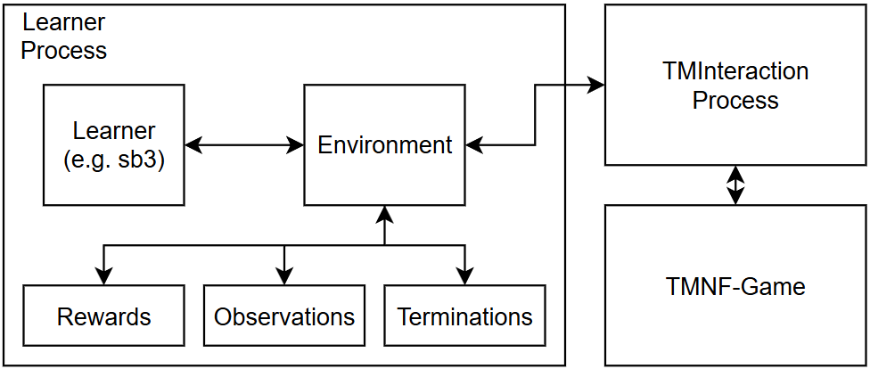

Project Structure
The two main things to understand when using this project is how the game-interaction works, and how the environment is structured. A high-level overview of how all components work together is given in this image:

The learner process consists of a learner (most likely a RL-Library like sb3) and the environment. The learner is what steps the environment, i.e. calls the step-method. The environment then sends IPC (Inter-Process-Communication) commands to the TMInteraction Process. This process continuously communicates with the plugin provided by TMInteraction via a TCP-Connection.
This architecture was chosen in order to completely de-couple the environment from the necessary continuous communication with the game. This enables the environment to only send and receive on-demand.
Process-Wrapper game_interaction.process_wrapper.TMIProcessWrapper
The main task of this class is to continuously respond to TCP-Messages sent by the TMInterface Plugin, such that the connection never fails. The envionrment communicates with the ProcessWrapper by sending commands via a Multiprocessing-Queue and the Process-Wrapper answers the environments-requests also via a Multiprocessing-Queue.
Note
The description of the prcess wrapper has to be technical, and if you do not plan on modifying the environment or how Trackmania-Gym Interacts with the game you will most likely not need to know this.
Start of the Process
This is the encapsulated way of starting the ProcessWrapper. This method starts the Game and ProcessWrapper and waits for a Connected-Signal from the ProcessWrapper. I.e. once this method returns, control- and response-queues can immediately be used.
# instanciation of process-wrapper
from game_interaction.run_multiprocess_wrapper import start_process_and_wait_for_startsignal
p, control_queue, response_queue = start_process_and_wait_for_startsignal(...)
p is the process-object, the control_queue is what is used to send commands to the ProcessWrapper and response_queue is where the answer can be expected.
ICP-Commands
These are the available commands that the process wrapper can respond to. In this example, a step-command is sent with command id 10 (this is not relevant really).
from game_interaction.ipc_fields import IPCFields, IPCCommands
# send command
cmd = IPCCommands.step(10, action)
command_queue.put_nowait(cmd)
# get response and handle accordinlgy.
response = response_queue.get(timeout=timeout)
assert response[IPCFields.CMD_ID] == cmd_id
if response[IPCFields.STATUS] == IPCFields.STATUS_OK:
pass # everything worked
elif response[IPCFields.STATUS] == IPCFields.STATUS_ERROR:
errormsg = response[IPCFields.ERROR] # get error
Depending on what command was sent, the respons-object, which is a dictionary may contain different keys. All keys the response-object may contain, if any additionally to STATUS are specified in IPCFields.
Waitforstep
Waitforstep-Mode is one of the most important features of the ProcessWrapper, as it directly supports the desired MDP behaviour of the RL environment. This mode can be activated using the waitforstep-command. After this mode has been activated, the ProcessWrapper expects step commands.
The main purpose of this mode is to ensure equal timing between step-calls, i.e. equal timing between actions in the environment. You do not have to worry about sending the step commands quickly enough, rather this delay is taken care of by resetting the game-state. Without this mode, the amount of in-game-steps between each environment-step are unknwon and your agent may not learn anything as the distance between two environment steps is too far apart.
Basically this mode allows the implementation of actions_per_second and actually match these seconds to in-game-seconds.
Policy Updates
When the policy updates the waiting time between environment-steps may significantly increase; as the learner process is busy doing backpropagation. This is handled by the process wrapper by disengaging the waiting for a step-command and stopping the current action of the agent. Once the learner is done and starts sending step-commands again, the ProcessWrapper automatically resumes Waitforstep-Mode.
Modules
A high-level description of all top-level modules
configs- Contains all configuration filesgame_interaction- Everything necessary for the communication with TMNFneural_networks- Contains Neural Networks, Feature Extractors, Learning-Rate Schedulersplotting- Our plotting framework necessary for testing and live-visualizationsscirpts- Training and testing executablestrackmania_env- Everything around the trackmania-environment
trackmania_env
├── envs
│ ├── single_agent_env.py
│ └── testenv_single_agent.py
├── observations
│ └── observation_manager.py
| └── implementations (contains all implemented observation-managers)
│ ...
├── rewards
│ └── reward_calculation.py
| └── implementations (contains all implemented reward-managers)
│ ...
└── utils
├── position_buffer.py
└── reference_line_manager.py
....
trackmania_env.utils contains standalone classes or methods that are either used by the enviornmenr, reward or observation-managers.
- tmn_sb3 - Utilities necessary for the interaction with stable-baselines 3
- tracks - Track-files (.Gbx) we use for trainings and their corresponding reference lines